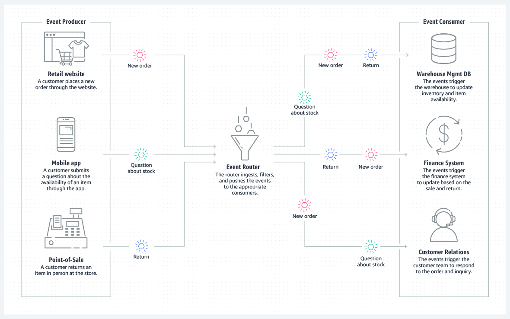
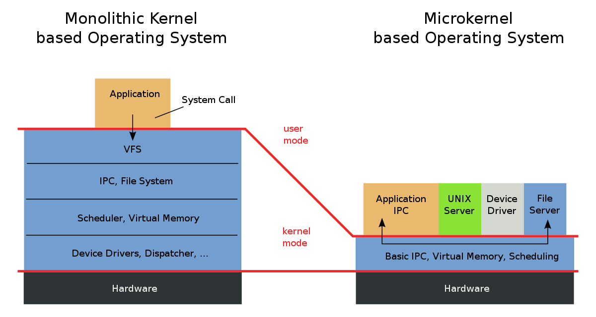
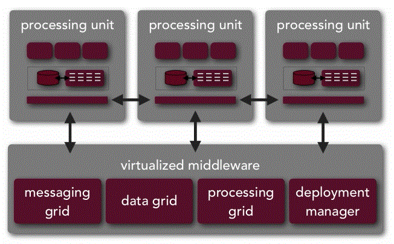

<!doctype html>
<html class="theme-5">
<meta charset="utf-8" />
<link href="../html-slideshow.bundle.min.css" rel="stylesheet" />
<link href="../style.css" rel="stylesheet" />
<script src="https://dbwebb.se/cdn/js/html-slideshow_v1.1.0.bundle.min.js"></script>

<title>System Design Specification</title>

<script data-role="slide" type="text/html" data-markdown class="titlepage center">
# System Design Specification (SDS)
## Defining and visualising the architecture of a system
### Mikael Roos
</script>


<script data-role="slide" type="text/html" data-markdown>
# Agenda

* What is a system design specification?
* Different architecture patterns
* Highlevel analys and design of a system
* Hints and tips

</script>


<script data-role="slide" type="text/html" data-markdown class="titlepage center">
# System Design Specification (SDS)
</script>


<script data-role="slide" type="text/html" data-markdown class="center">
<figure>

<figcaption>Understanding the problem by drawing a diagram of the architecture.</figcaption>
</figure>

</script>


<script data-role="slide" type="text/html" data-markdown>
# Expected outcome

* System Design Specification (SDS)
    * One document containing the text, reasoning, do's and dont's
    * Communicate with team members and stake holders
* You have a system to build - create a highlevel plan
* Plan your system and its subsystems,
    * choose your architecture 
    * create a blueprint of your system-to-be

</script>


<script data-role="slide" data-markdown type="text/html">
# Target audience

* Teammates
* Stakeholders
    * Project managers
    * Unit managers
* Customer
    * The orderer who pays the bill
    * The user

</script>


<script data-role="slide" data-markdown type="text/html">
# Split Analysis and Design

* Analysis
    * Sketch the system, without any thoughts of the target environment where it should be implemented

* Design
    * Select a target environment for the analysed system and make it fit

> Separate Analysis (highlevel system) from Design (target environment) to make it easier to communicate.

> Compare to database ER modelling.

</script>


<script data-role="slide" type="text/html" data-markdown>
# SDS

> "One document to analyse and design the system on the highest level for understanding of all the stakeholders."

</script>


<script data-role="slide" type="text/html" data-markdown class="titlepage center">
# Architecture patterns
</script>


<script data-role="slide" data-markdown type="text/html">
# Architecture patterns

* Layered architecture
* Event-driven architecture
* Microkernel architecture
* Microservices architecture
* Space-based architecture

</script>


<script data-role="slide" type="text/html" data-markdown>
# Layered architecture

> Multitier architecture is a client-server architecture in which presentation, application processing and data management functions are physically separated.

> The most widespread use of multitier architecture is the three-tier architecture.

<p class="footnote">https://en.wikipedia.org/wiki/Multitier_architecture</p>

</script>


<script data-role="slide" type="text/html" data-markdown class="center">
# Layered architecture

<figure>

<figcaption>Example drawing on a Layered architecture.</figcaption>
</figure>

</script>


<script data-role="slide" type="text/html" data-markdown class="center">
# Layered architecture...

<figure>

<figcaption>Another example drawing on a Layered architecture.</figcaption>
</figure>

</script>


<script data-role="slide" type="text/html" data-markdown>
# Event-driven architecture

> An event-driven system typically consists of event emitters (or agents), event consumers (or sinks), and event channels.

<p class="footnote">https://en.wikipedia.org/wiki/Event-driven_architecture</p>

</script>


<script data-role="slide" type="text/html" data-markdown class="center">
# Event-driven architecture

<figure>

<figcaption>Example drawing on a Event-driven architecture.</figcaption>
</figure>

</script>


<script data-role="slide" type="text/html" data-markdown class="center">
# Event-driven architecture...

<figure>

<figcaption>Another example drawing on a Event-driven architecture.</figcaption>
</figure>

</script>


<script data-role="slide" type="text/html" data-markdown>
# Microkernel architecture

> Microkernel approach is to define a very simple abstraction over the hardware.

<p class="footnote">https://en.wikibooks.org/wiki/Operating_System_Design/Kernel_Architecture/Microkernel</p>

</script>


<script data-role="slide" type="text/html" data-markdown class="center">
# Microkernel architecture

<figure>

<figcaption>Example drawing on a Microkernel architecture.</figcaption>
</figure>

</script>


<script data-role="slide" type="text/html" data-markdown class="center">
# Microkernel architecture...

<figure>

<figcaption>Another example drawing on a Microkernel architecture.</figcaption>
</figure>

</script>


<script data-role="slide" type="text/html" data-markdown>
# Microservices architecture

> Architectural pattern that arranges an application as a collection of loosely-coupled, fine-grained services, communicating through lightweight protocols.

<p class="footnote">https://en.wikipedia.org/wiki/Microservices</p>

</script>


<script data-role="slide" type="text/html" data-markdown class="center">
# Microservices architecture

<figure>

<figcaption>Example drawing on a Microservices architecture.</figcaption>
</figure>

</script>


<script data-role="slide" type="text/html" data-markdown class="center">
# Microservices architecture...

<figure>

<figcaption>Another example drawing on a Microservices architecture.</figcaption>
</figure>

</script>


<script data-role="slide" type="text/html" data-markdown>
# Space-based architecture

* Architecture pattern for applications that have variable and unpredictable concurrent user volumes.
* Designed to address and solve scalability and concurrency issues
* Interact by exchanging tuples/entries via one or more shared spaces

<p class="footnote">https://en.wikipedia.org/wiki/Space-based_architecture</p>

</script>


<script data-role="slide" type="text/html" data-markdown class="center">
# Space-based architecture

<figure>

<figcaption>Example drawing on a Space-based architecture.</figcaption>
</figure>

</script>


<script data-role="slide" type="text/html" data-markdown class="titlepage center">
# 4+1 Architectural View Model

> A model to make several drawings to understand the system.

</script>


<script data-role="slide" type="text/html" data-markdown>
# 4+1 Architectural View Model

>  "Describe the architecture of software-intensive systems, based on the use of multiple, concurrent views".

> The views are used to describe the system from the viewpoint of different stakeholders, such as end-users, developers, system engineers, and project managers.

</script>


<script data-role="slide" type="text/html" data-markdown>
# 4+1 Architectural View Model

* Logical View
* Process view
* Development view
* Physical view
* Scenarios

<p class="footnote">https://en.wikipedia.org/wiki/4%2B1_architectural_view_model</p>

</script>


<script data-role="slide" type="text/html" data-markdown>
# 4+1 View Model...

* Logical View
    * Functionality provided to the end users
* Process view
    * Dynamic aspects and run time behaviour.

</script>


<script data-role="slide" type="text/html" data-markdown>
# 4+1 View Model...

* Development view
    * Show subsystems/components known to the programmer.
* Physical view
    * Physical nodes and layers, for the system engineer.

</script>


<script data-role="slide" type="text/html" data-markdown>
# 4+1 View Model...

* Scenarios
    * Describing the architecture using use cases.

</script>


<script data-role="slide" type="text/html" data-markdown class="center">
# 4+1 View Model...

<figure>

<figcaption>The "4+1 Architectural View Model".</figcaption>
</figure>

</script>


<script data-role="slide" type="text/html" data-markdown>
# 4+1 View Model...

> The “4+1” view model is rather “generic”: other notations and tools can be used, other design methods can be used, especially for the logical and process decompositions, but we have indicated the ones we have used with success.

<p class="footnote">https://en.wikipedia.org/wiki/4%2B1_architectural_view_model</p>

</script>


<script data-role="slide" type="text/html" data-markdown>
# UML diagrams

* Class, state diagrams (logical view)
* Sequence, communication, activity diagrams (process view)
* Component, package diagram (development view)
* Deployment diagrams (physical view)
* Use case diagram (scenarious)

<p class="footnote">UML with relation to the 4+1 model</p>

</script>


<script data-role="slide" type="text/html" data-markdown class="titlepage center">
# How to proceed?
</script>


<script data-role="slide" type="text/html" data-markdown>
# System analysis and design

* Fundamental structure of a software system
    * software elements
    * relations among them
    * properties of the elements/relations
    * usage of the system
    * data/events in the system
    * interfaces and sub modules
* A blueprint for the system

</script>


<script data-role="slide" type="text/html" data-markdown>
# Start with analysis

1. Understand the system to be built
1. Explain the system
1. Sketch the system
1. Create a SDS document as an understanding and conclusion of your work 

> Make it happen is more important than making it right.

</script>


<script data-role="slide" type="text/html" data-markdown>
# Hints

* Create the SDS document and make it your work area where you document and agree on the system
* Follow the 4+1 model?

* Write to someone who are on a slightly lesser level than youreself in understanding the system

</script>


<script data-role="slide" type="text/html" data-markdown>
# Proceed with design

1. Divide into sub systems and explain/draw each
1. Decide on the users and the interfaces
1. Decide on the implementation techniques
1. Explain choosen technologies and note what other techniques you evaluated
1. Complete the SDS document as an understanding and conclusion of your work 

</script>


<script data-role="slide" type="text/html" data-markdown>
# The SDS

* Is about making fundamental structural choices
* Facilitates communication between stakeholders
* Captures early decisions about the high-level design
* To hold on to as the project goes on

> "What did we write in the SDS about this?"

</script>


<script data-role="slide" type="text/html" data-markdown>
# How to draw

* Make each picture tell a well defined story
* Several small pictures might build a better story then one large and complex picture
* Make it look good

</script>


<script data-role="slide" type="text/html" data-markdown>
# Tools

* Polya's Problem Solving Techniques
* Top-down and bottom-up design
* Flowchart
* Pseudocode
* Class diagram
* Use case diagram 
* Entity relationship diagram

</script>


<script data-role="slide" type="text/html" data-markdown>
# Summary

* What is a System Design Specification (SDS)
* About software architecture patterns
* How to think about analysis and design

<p class="footnote">Make the SDS look good.</p>

</script>


<script data-role="slide" type="text/html" data-markdown class="titlepage center">
# The end
</script>


<script data-role="slide" type="text/html" data-markdown>
</script>


</html>
